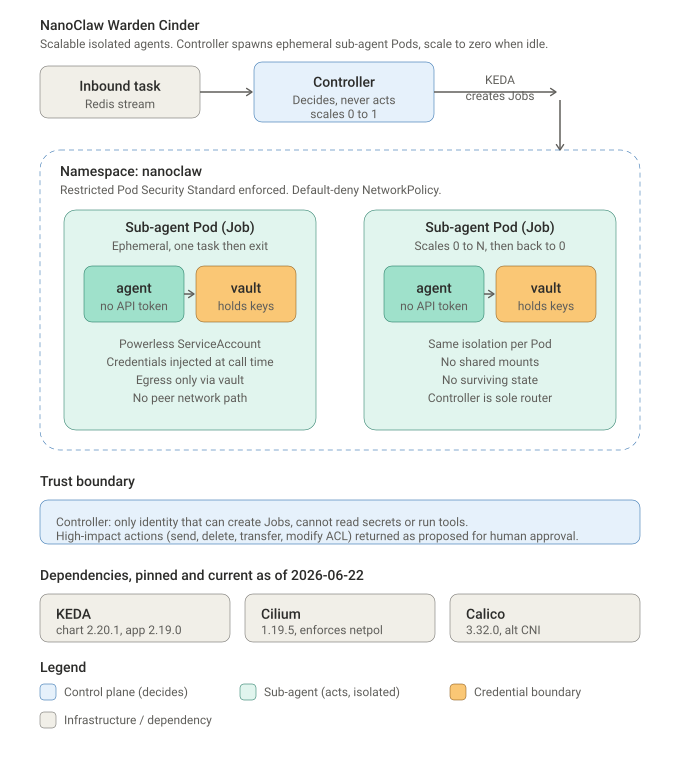

Scalable, isolated agentic AI on Kubernetes. A controller spawns ephemeral sub-agent Pods that scale to zero when idle. Versions pinned and verified current as of 2026-06-22. Open infographic.svg directly for a vector copy.
infographic.svg
